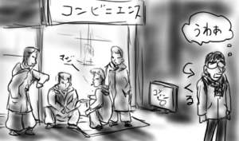
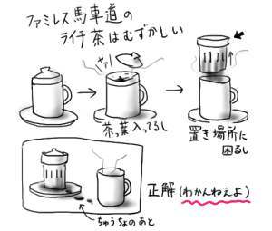
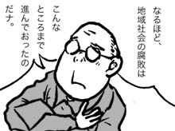

近所のコンビニが改装されました．
会社を出るのが遅かったため，コンビニでご飯でも買おうと改装後初めてそのコンビニに立ち寄ったところ…．
この寒空の中，スクーターで乗り付けたカッコイイ髪型のブラックエンペラー数人が，入り口付近で店内のバイト女子を視姦しながらダラダラとだべっているではないですか．以前は人通りが少なくて安全なコンビニだったのに！どんどんと僕の行き場所がなくなっていきます．

回れ右して仕方なく吉牛に入ったところ，店員に注文しては「バッカ野郎が！」．隣のおじさんに突然「バッカ野郎が！」．箸をテーブルに転がして「バッカ野郎が！」．そして昼間からパチンコをやってる人達について「バッカ野郎が！」と叫ぶバッカ野郎おじさんがいましたよ．「ホントろくなもんじゃないヨ！」と言っていました．
僕も本当にそう思います．
昨日は日記を書いたのにアップロードするのを忘れてました(宿題はやったんですけど忘れました)．
昨日もファミレスで話題になったのだが，スナックというものの存在が謎だ．どんな小さな町にも必ずあるのだが，どうやって経営が成り立っているのか想像できない．概念すら理解できない．
僕の高校の近くはスナック乱立地帯で，先生方とか飲み会の3次会とかで利用していたに違いなくて，そう考えるとなぜか妙にへこむ．中でも特に目を引いたのが，スナック「くろのす(ゴッドスピードユー！系の漢字で)」とかいう黒塗りの壁にスコーピオンやスパイダーの描かれたとても悪そうなお店で，頭髪に洗濯バサミのようなものをはさんだママさんがゴミ出しをしている様子を，登校時に目撃したりした．
蠍や蜘蛛の記憶のせいで，僕の中ではスナックとはバイオレンスぽい人達が行くところとして定着している．
そんなお店が，どんな町にもいたるところに．もう世紀末っぽい．
風邪をおして出かけたのに，お目当ての店は潰れてありませんでした(挨拶)．
ただで帰ってなるものかと，kaito「Special Life」(kompakt)を手に入れてきました(むしろ代金を支払っています)．beatmaniaなんかでお馴染みのQuadraことHiroshi Watanabeの別名義リリースなのですが，ナイスなハウスミュージックになっていてかなり好感触です．
一緒に買ったRovo「Flage」(warner indies network)も素晴らしかったです．しかしこれだけのクォリティのものをほぼ月刊のペースでリリースする山本精一や益子樹の界隈は本気ですごいなぁ．
ふところが適度に寂しくなったあたりで，チカメンツと合流し，アクメツだ！とばかりにファミレスで晩飯を食って帰ってきました．ドリンクでライチ茶を頼んだのですが，飲める状態にするまでが異様に難しく，蓋を開けては首をひねっている僕を見兼ねて店員さんがそっと正解を教えてくれました(下図)．普通わかりません！

ダベリングの主な話題は藤岡弘探検隊でした．12/25．絶対見るよね．ナゾの猿人ジュンマ！今から楽しみでなりません．今日本に必要なのは水曜スペシャルのような大ホラ吹きモンド映像ドキュメントであって，決してソニンに体育館でドミノを並べさせる映像じゃないと僕は思います．彼女，もうこらえてあげてください(方言)．
熱は下がりましたが，今度はのどがエヘン虫です．
どうも僕は冬になると喉がやられて困るのですが，考えてみると
- 寒くなるので毛布を出す
- 鼻がつまるようになる
- 口を開けて寝るようになる
- 喉がやられる
というサイクルを毎年忠実になぞっているらしい．鼻に対して，毛布がなんかとてつもないことになっているんじゃないか．毎年クリーニングには出しているはずなのに．
というわけで，来客用の毛布を自分用に下ろすべきかどうか，今真剣に悩んでいます．
風邪で臥せっておりました．先週あたりから体が異様にだるかったのですが，ここに来ていよいよ風邪爆弾が爆発という感じです．風邪爆弾の中身は鼻水とかです．こわっ．
会社で異様な寒気を覚えたので，急遽帰宅して寝ていたのですが，翌日になっても体調が改善せず，結局また会社を休む羽目になってしまいました．今週の仕事してないっぷりはすごい．
平日の昼下がりというと，当然いろんな人が働いているわけで，すぐ近くでも足場を組むトンカンという音が聞こえてきます．発熱でぼんやりする頭に響きまくるので不愉快極まりない．やめてくれぇと天井に向かって念じていると，今度は地の底から響いてくるような無気味な低音が聞こえ始めました．何を召還してますか！？大工の人達だと思っていたものが，実は謎の悪魔教団だったなんて．
「なるほど，地域社会の腐敗というものは，こんなところまで進んでおったのだナ」などと水木しげる先生ばりの思考で納得しているあたり，さすが風邪っぴき脳．ろくに回っておりません．アパラチャノモゲータ！トスイガータルポ！

ちなみに，そのまま眠りに落ちてしまったので，謎の低音の正体をつきとめることは出来ませんでした．全部幻聴だったらどうしよう…．